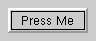
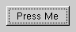

The QPushButton widget provides a push button with a text or pixmap label. More...
#include <qpushbutton.h>
Inherits QButton.
A default push button in a dialog emits the clicked signal if the user presses the Enter key.
A push button has TabFocus as a default focusPolicy(), i.e. it can
get keyboard focus by tabbing but not by clicking.
 
See also: QRadioButton, QToolButton and GUI Design Handbook: Push Button
Examples: tictac/tictac.cpp drawdemo/drawdemo.cpp xform/xform.cpp layout/layout.cpp qmag/qmag.cpp widgets/widgets.cpp
Constructs a push button with no text.
The parent and name arguments are sent to the QWidget constructor.
Constructs a push button with a text.
The parent and name arguments are sent to the QWidget constructor.
Returns TRUE if the button is an auto-default button.
See also: setAutoDefault().
[virtual protected]Draws the push button, except its label.
See also: drawButtonLabel().
Reimplemented from QButton.
[virtual protected]Draws the push button label.
See also: drawButton().
Reimplemented from QButton.
[virtual protected]Handles focus in events for the push button.
Reimplemented from QWidget.
Returns TRUE if the button is default.
See also: setDefault().
Returns TRUE if this button indicates to the user that pressing it will pop up a menu, and FALSE otherwise. The default is FALSE.
See also: setIsMenuButton().
Reimplements QWidget::move() for internal purposes.
Reimplements QWidget::move() for internal purposes.
Examples: drawdemo/drawdemo.cpp
Reimplements QWidget::resize() for internal purposes.
Reimplements QWidget::resize() for internal purposes.
Examples: drawdemo/drawdemo.cpp
Sets the push buttons to an auto-default button if enable is TRUE, or to a normal button if enable is FALSE.
An auto-default button becomes the default push button automatically when it receives the keyboard input focus.
See also: autoDefault() and setDefault().
Sets the button to be the default button if enable is TRUE, or to be a normal button if enable is FALSE.
A default push button in a dialog emits the QButton::clicked() signal if the user presses the Enter key. Only one push button in the dialog can be default.
Default push buttons are only allowed in dialogs.
See also: isDefault(), setAutoDefault() and QDialog.
Examples: xform/xform.cpp
Reimplements QWidget::setGeometry() for internal purposes.
[virtual]Reimplements QWidget::setGeometry() for internal purposes.
Examples: xform/xform.cpp qmag/qmag.cpp
Reimplemented from QWidget.
Tells this button to draw a menu indication triangle if enable is TRUE, and to not draw one if enable is FALSE (the default).
setIsMenuButton() does not cause the button to do anything other than draw the menu indication.
See also: isMenuButton().
[slot]Switches a toggle button on if enable is TRUE or off if enable is FALSE.
See also: isOn(), toggle(), toggled() and isToggleButton().
Examples: qmag/qmag.cpp
Makes the push button a toggle button if enable is TRUE, or a normal push button if enable is FALSE.
Toggle buttons have an on/off state similar to check boxes. A push button is initially not a toggle button.
See also: setOn(), toggle(), isToggleButton() and toggled().
Examples: qmag/qmag.cpp
[virtual]Returns a size which fits the contents of the push button.
Examples: layout/layout.cpp widgets/widgets.cpp
Reimplemented from QWidget.
[slot]Toggles the state of a toggle button.
See also: isOn(), setOn(), toggled() and isToggleButton().
Search the documentation, FAQ, qt-interest archive and more (uses
www.troll.no):
This file is part of the Qt toolkit, copyright © 1995-99 Troll Tech, all rights reserved.
It was generated from the following files:
| Copyright © 1999 Troll Tech | Trademarks | Qt version 1.45
|